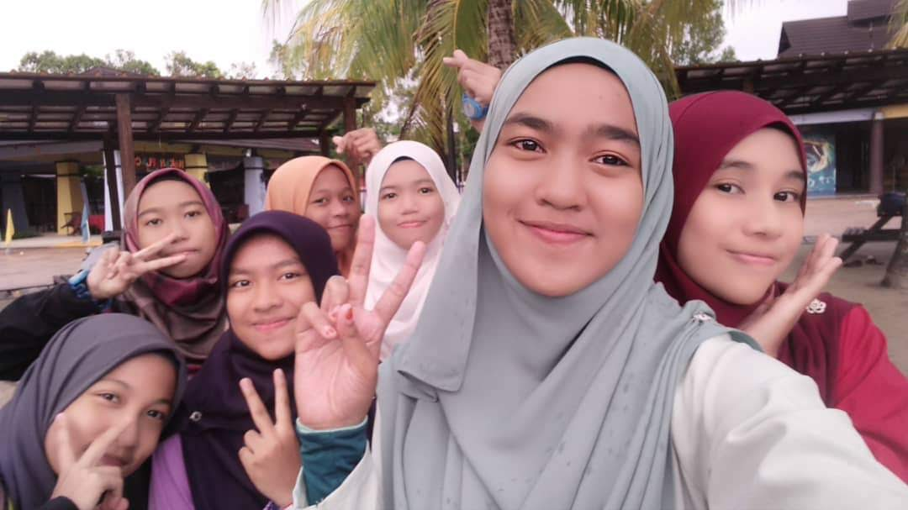
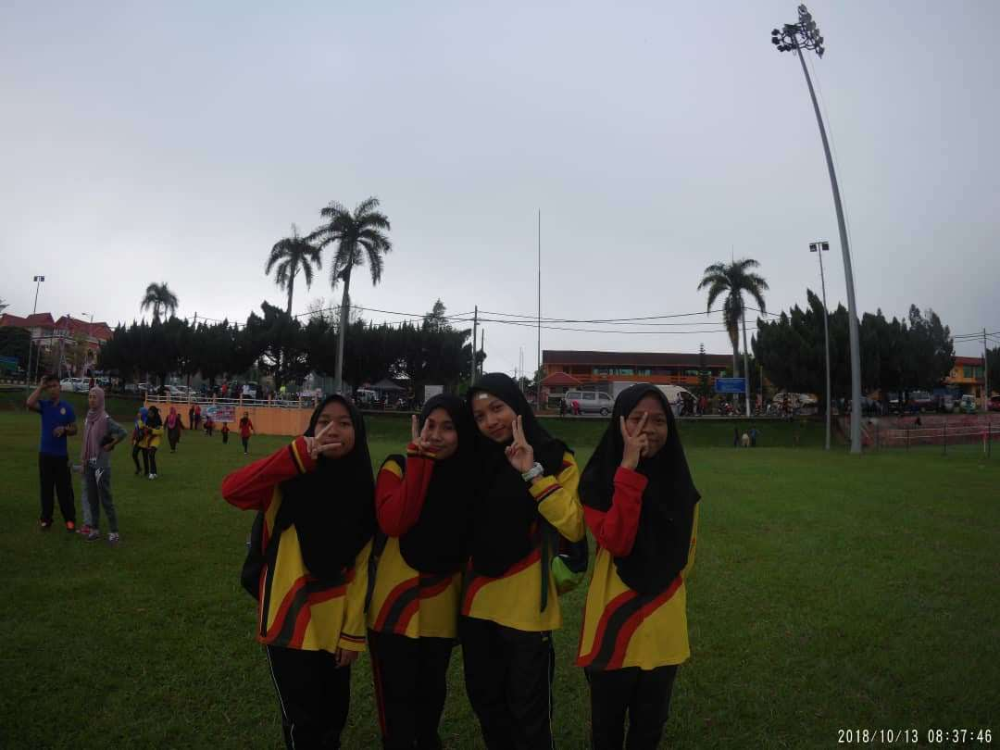
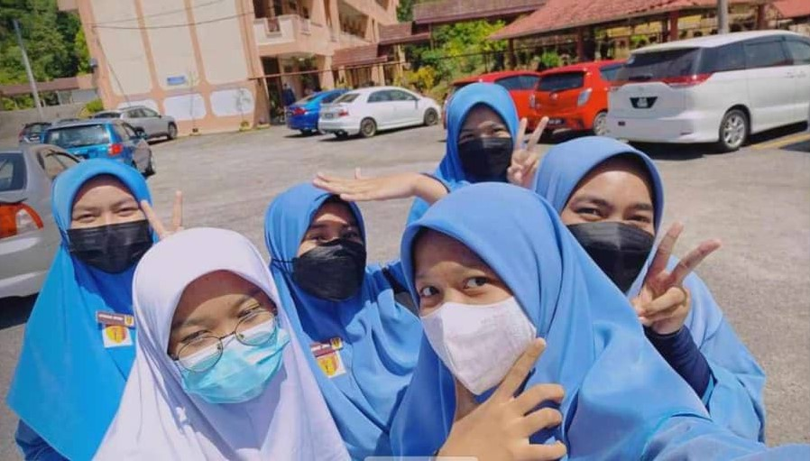
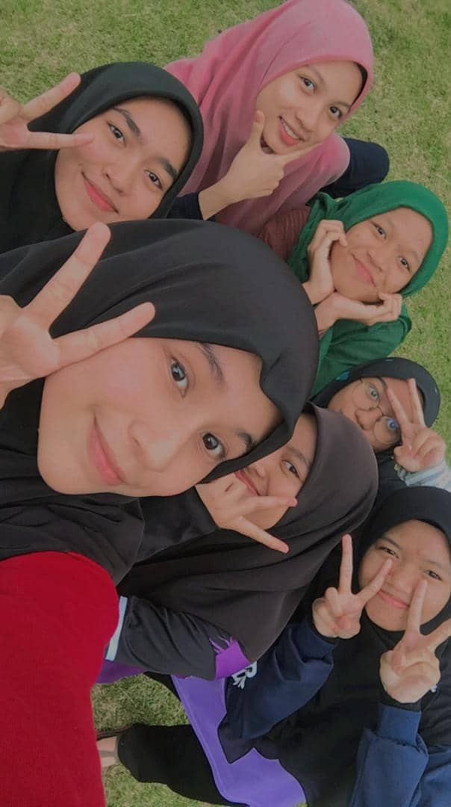
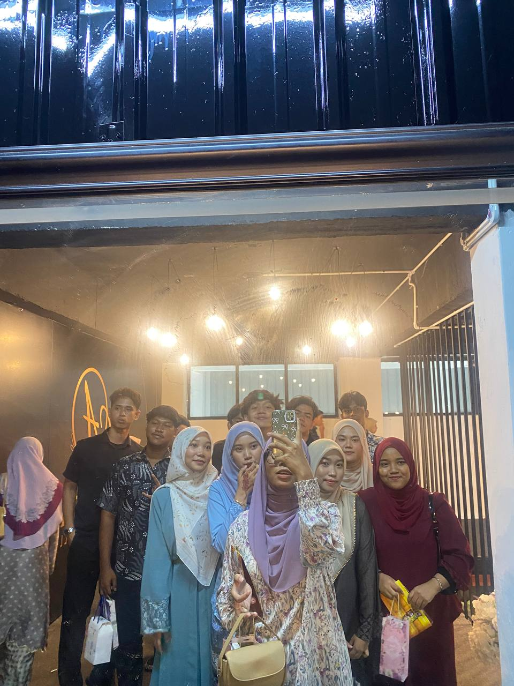
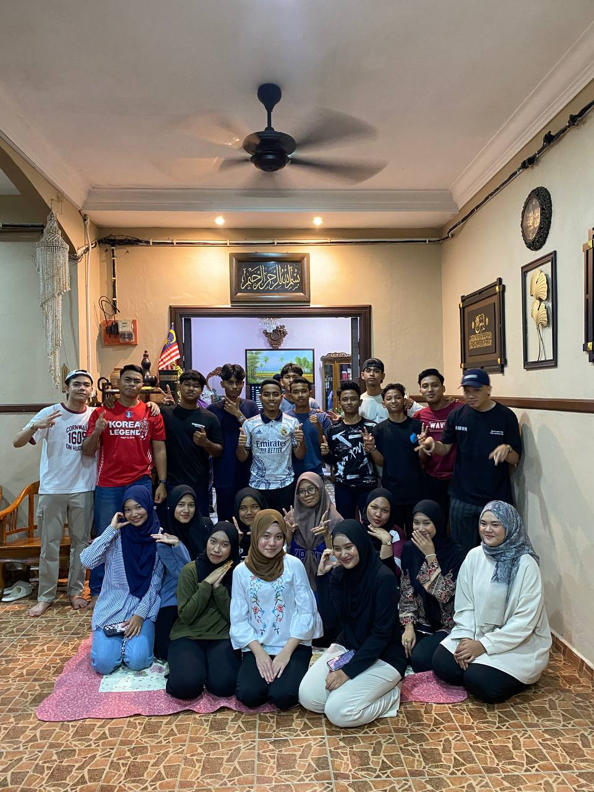

My Education Journey
Primary School
SK Bekuai (Graduated in 2016)My primary school experience was a vibrant journey of discovery and growth, filled with engaging lessons that sparked my curiosity and a wonderful community of friends who made every day enjoyable.
High School
SMK Tun Saban (2017-2022)High school was a time of self-discovery, achievements, and lifelong friendships.




University
Universiti Teknologi MARA (UiTM) Kedah (2022-2025)University life was transformative, preparing me for my future while creating unforgettable memories.

